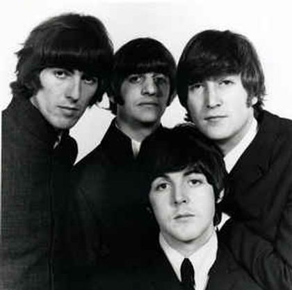
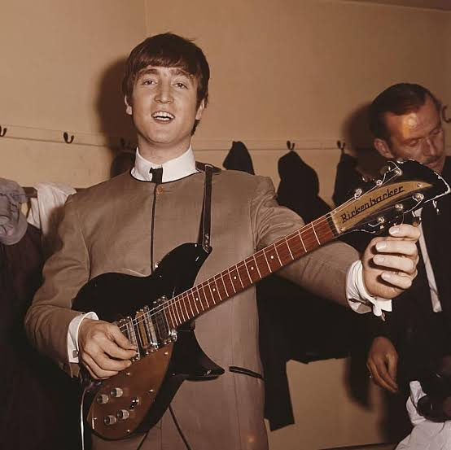
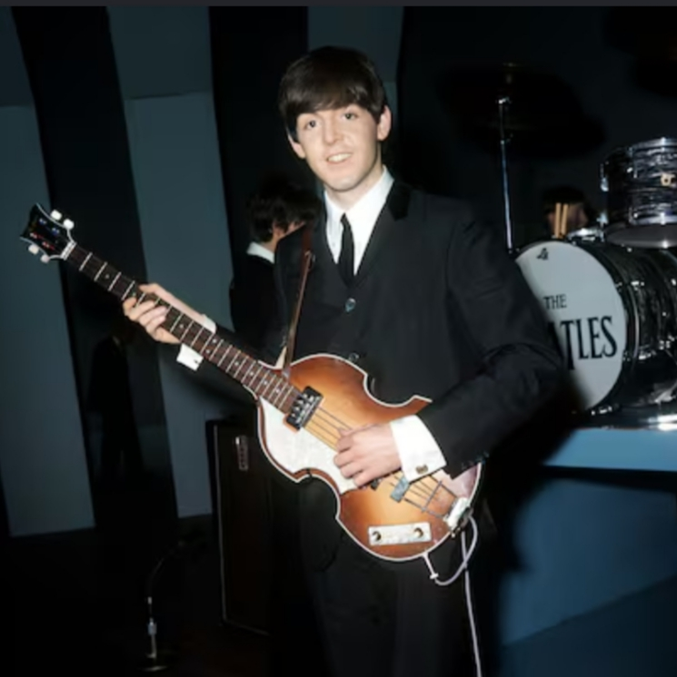
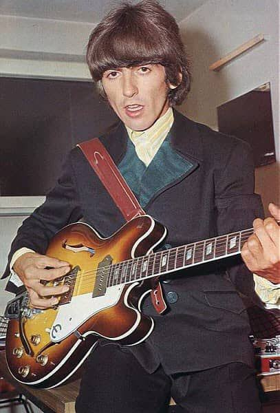
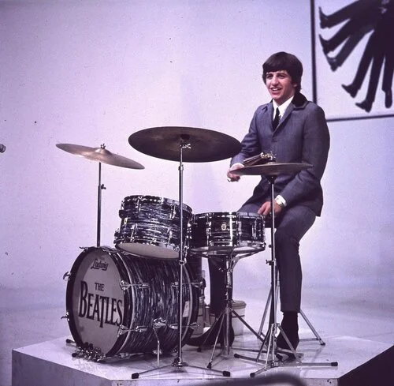

El cuarteto que revolucionó la música moderna
Dónde y cómo se formó la banda:

The Beatles fue la banda de rock británica más influyente de la historia,
formada en Liverpool en 1960 por John Lennon, Paul McCartney, George
Harrison y Ringo Starr. El grupo revolucionó no solo la música popular
a través de la experimentación en el estudio de grabación y la
composición de géneros diversos (desde el pop melódico hasta la
psicodelia), sino también la cultura global del siglo XX al desatar el
fenómeno de masas conocido como la "Beatlemanía". Su legado artístico
transformó para siempre la industria musical, la moda, el activismo
social y los videos musicales, consolidándolos como un ícono cultural
eterno.
El primer álbum/disco de The Beatles
El primer álbum fue Please Please Me (1963)
Grabaron 10 de las 14 canciones en un solo día (menos de 10 horas) porque no había presupuesto.
La locura de Twist and Shout:
John Lennon tenía un resfriado terrible. Destruyó su garganta
cantándola en una sola toma al final de la noche y terminó sangrando.
-Qué generó: Inventó la "Beatlemanía". Pasó 30 semanas en el número 1 y
demostró que las bandas de jóvenes podían vender álbumes completos,
no solo canciones sueltas.
La gran canción: A Day in the Life
Es la unión de dos canciones distintas (una triste de John y una
alegre de Paul). Participó una orquesta de 40 músicos disfrazados con
narices de payaso.
-Qué generó: Fue prohibida por la BBC debido a supuestas referencias a las
drogas. Además, demostró que la música pop podía ser arte culto,
inspirando años después a bandas como Queen a hacer canciones complejas
como Bohemian Rhapsody.
El último álbum/disco de The Beatles
El último álbum: Let It Be (1970)
La banda estaba al borde de la separación. Las sesiones fueron un desastre
absoluto, peleando todo el tiempo en un estudio frío mientras los filmaban
para un documental. El ambiente era tan tenso que odiaron las grabaciones
y las dejaron guardadas en una repisa durante un año.
Para poder lanzar el disco, le dieron las cintas al famoso productor
Phil Spector. Él le añadió grandes arreglos de orquesta y coros a escondidas
de Paul McCartney, lo que enfureció a Paul pero salvó el lanzamiento del
álbum tras la separación oficial del grupo.
-Qué generó: Marcó el fin de una era. Salió a la venta un mes después de
que la banda se separara oficialmente, convirtiéndose en el testamento
melancólico del grupo más grande de la historia.
La gran canción: Let It Be
Paul McCartney la compuso tras tener un sueño con su madre, Mary
(quien había muerto de cáncer cuando él era un adolescente). En el sueño,
ella se le apareció en un momento de mucho estrés por las peleas de la
banda y le dijo: "Déjalo ser (Let it be), todo va a estar bien".
-Qué generó: Se convirtió en el himno de despedida definitivo. Generó un
impacto emocional gigante en todo el mundo, sirviendo como una canción de
consuelo y paz universal justo cuando los fans procesaban el trauma de
ver a los Beatles romperse para siempre.
El álbum más importante para la banda y para la gente:
El álbum más importante tanto para los propios Beatles como para el
público y la historia de la música fue, sin duda, Sgt. Pepper's Lonely
Hearts Club Band, lanzado en 1967.
-Para ellos: fue el más importante porque fue su máxima liberación
creativa.
Los Beatles estaban hartos de las giras porque los gritos de las fans
no los dejaban escuchar sus propios instrumentos. Así que decidieron
dejar de dar conciertos para siempre y encerrarse en el estudio a
experimentar. Para quitarse la presión de ser "The Beatles", se
inventaron una banda ficticia (la Banda del Club de Corazones Solitarios
del Sargento Pimienta) [Sgt. Pepper]. Esto les dio la libertad de
vestirse con trajes psicodélicos de colores y tocar géneros que nunca
antes habían probado, desde música clásica india hasta circo
tradicional.
-Para la gente: El nacimiento de la cultura pop moderna.
-Lo que generó fue una explosión cultural masiva. La gente no solo
escuchaba la música; analizaba la famosa portada llena de personajes
históricos (como Marilyn Monroe, Albert Einstein o la cara de los
propios Beatles en cera) y buscaba mensajes ocultos en las letras
[Sgt. Pepper]. Por primera vez en la historia, un disco de música juvenil
unió a adolescentes, intelectuales y críticos de arte en una sola
opinión: el rock era el nuevo arte moderno.
Las 3 canciones más conocidas a nivel mundial de The Beatles
1. Here Comes The Sun (1,900+ millones de reproducciones)
Esta canción es del álbum "Abbey Road", fue publicada el 26 de septiembre
de 1969.
Significado: Es un himno al optimismo, la renovación y el alivio emocional
después de un período oscuro.
Contexto: Fue escrita por George Harrison en la primavera de 1969. Se
inspiró en el fin de un invierno británico especialmente largo y frío,
sumado a las intensas tensiones financieras y legales que sufría la banda
dentro de su productora Apple Corps. Harrison compuso la melodía con una
guitarra acústica en el jardín de su amigo Eric Clapton, sintiendo una
inmensa liberación al escapar de las reuniones de negocios del grupo.
2. Come Together (990+ millones de reproducciones)
Esta canción es del álbum "Abbey Road", fue publicada el 26 de septiembre
de 1969.
Significado: Aunque su letra es una serie de metáforas abstractas y
surrealistas, su significado original era de unión política, rebeldía
y contracultura.
Contexto: Escrita principalmente por John Lennon en 1969, inicialmente
iba a ser el tema de campaña del gurú del LSD y activista Timothy Leary
en su candidatura a gobernador de California contra Ronald Reagan
(el eslogan de Leary era "Come together, join the party"). Cuando Leary
fue arrestado por posesión de marihuana, la campaña terminó, pero Lennon
modificó la composición para adaptarla al álbum Abbey Road,
transformando los versos en descripciones enigmáticas llenas de
jerga que reflejaban el espíritu libre de la época.
3. Let It Be (983+ millones de reproducciones)
Esta canción es del álbum "Let It Be", fue publicada el 8 de mayo de 1970.
Significado: Es un mensaje de consuelo, aceptación y paz interior ante
la adversidad. Invita a "dejar las cosas ser" y a no perder la esperanza
cuando no se tiene el control de las situaciones.
Contexto: Escrita por Paul McCartney durante las caóticas e incómodas
sesiones de grabación de 1968, cuando la banda ya se estaba separando.
McCartney se sentía agotado y deprimido; una noche, tuvo un sueño en el
que se le apareció su madre, Mary Mohin McCartney (quien había fallecido
de cáncer cuando él tenía 14 años). En el sueño, ella le decía que no se
preocupara y que simplemente "lo dejara ser" (let it be). Aunque la
mención a "Mother Mary" (Madre María) suele confundirse con una referencia
religiosa, Paul aclaró que se trataba explícitamente de su propia madre.
Los integrantes de la banda y sus instrumentos:
Los integrantes de la banda son:

-John Lennon:
Nació el 9 de octubre de 1940 en Liverpool, Inglaterra,
y se convirtió en uno de los principales motores creativos de la
banda como cantante, guitarrista y compositor. Criado por su tía Mimi
tras la separación de sus padres, su infancia estuvo marcada por la
rebeldía y el arte, lo que llevó a fundar la banda "The Quarrymen",
la semilla de lo que más tarde serían "The Beatles". junto a Paul
McCartney formó una de las duplas compositivas más exitosas de la
historia de la música, destacando por su estilo directo, letras
introspectivas y un profundo activismo social que definió gran parte
de su posterior carrera como solista. John Lennon fue asesinado por
Mark David Chapman la noche del 8 de diciembre de 1980 en la entrada
del edificio Dakota en Nueva York.

-Paul McCartney:
Nació el 18 de junio de 1942 en Liverpool, Inglaterra, dentro de una
familia con fuertes lazos musicales gracias a su padre, un trompetista
de jazz aficionado. Reconocido como un multiinstrumentalista prodigioso,
asumió el rol de bajista, pianista, cantante y compositor, aportando al
grupo un extraordinario sentido de la melodía y el optimismo que
equilibraba el estilo de Lennon. Tras conocer a John en 1957, se
convirtió en una pieza fundamental para la evolución del sonido pop y
rock del grupo, manteniendo hasta el día de hoy una de las carreras
musicales más longevas, influyentes y exitosas de todos los tiempos.

-George Harrison:
Nació el 25 de febrero de 1943 en Liverpool, Inglaterra,
siendo el menor de cuatro hermanos y también el integrante más joven
de el cuarteto de Liverpool. Se unió al grupo a los 15 años gracias a
su amistad escolar con Paul, destacando rapidamente como el guitarrista
solista de la banda por su impecable técnica y su posterior
incorporación de instrumentos orientales como el sitar. A menudo
llamado "el Beatle silencioso", Harrison se consolidó con los años
como un compositor de enorme talento por derecho propio, regalando al
mundo clásicos inolvidables de la banda como "Something" y "Here Comes
The Sun". George Harrison murió a causa de un cáncer de pulmón con
metástasis cerebral.

-Ringo Starr:
(cuyo nombre real es Richard Starkey) Nació el 7 de julio de 1940 en
Liverpool, Inglaterra, creciendo en una de las zonas obreras más duras
de la ciudad y superando graves problemas de salud durante su infancia.
Fue el último miembro en unirse de forma definitiva a la banda en
1962 como baterista, reemplazando a Pete Best justo antes de que el
grupo alcanzara la fama mundial. Con su carisma, sentido del humor y
un estilo rítmico que daba estabilidad a las complejas composiciones
de sus compañeros, Ringo se ganó el cariño del público y demostró su
versatilidad aportando también su voz en temas emblemáticos como
"Yellow Submarine" y "Octopus Garden".
¿Por qué se separaron?
La separación de The Beatles en 1970 fue el resultado de una compleja
acumulación de tensiones que comenzaron a agravarse tras la muerte de
su mánager, Brian Epstein, en 1967, lo que dejó al grupo sin su principal
mediador y provocó un caos financiero en su empresa Apple Corps.
La posterior elección de Allen Klein como nuevo administrador dividió
profundamente a la banda, ya que Paul McCartney prefería a su suegro
Lee Eastman, fracturando la confianza interna. A nivel artístico, el
control creativo que asumió Paul generó resentimiento en John Lennon y
George Harrison, este último frustrado por la constante limitación de
sus propias composiciones, mientras que el desgaste general llevó a
Ringo y a George a abandonar temporalmente el grupo en distintas sesiones
de grabación. Finalmente, la evolución de sus vidas personales, los
nuevos intereses individuales y la presencia constante de Yoko Ono
(la esposa de John) en el estudio rompieron la vieja dinámica del
cuarteto, llevando a John a anunciar internamente su salida en 1969 y
a Paul a hacer pública la ruptura definitiva eol 10 de abril de 1970.
¿Cuál es la foto más famosa de The Beatles?
La foto más famosa de The Beatles es la de la portada de su álbum
"Abbey Road" (1969), donde aparecen cruzando un paso de cebra en la
calle de Londres que lleva el mismo nombre que el álbum. Tomada por
el fotógrafo Iain Macmillan en solo diez minutos, esta imagen se
convirtió en un ícono de la cultura pop porque capturó la última
sesión fotográfica de John, Paul, George y Ringo antes de su separación
definitiva. Su impacto creció exponencialmente gracias a su diseño
radical sin texto, a la facilidad de ser imitada por millones de
turistas en todo el mundo. La portada de Abbey Road es, con toda
probabilidad, la imagen más parodiada, homenajeada y recreada en la
historia por cientos de bandas de música, series de TV y películas.
Todos los álbumes de the beatles:
El autor de ésta obra maestra: Facundo Matta Fernandez de 1°,1° en el
taller de programación.